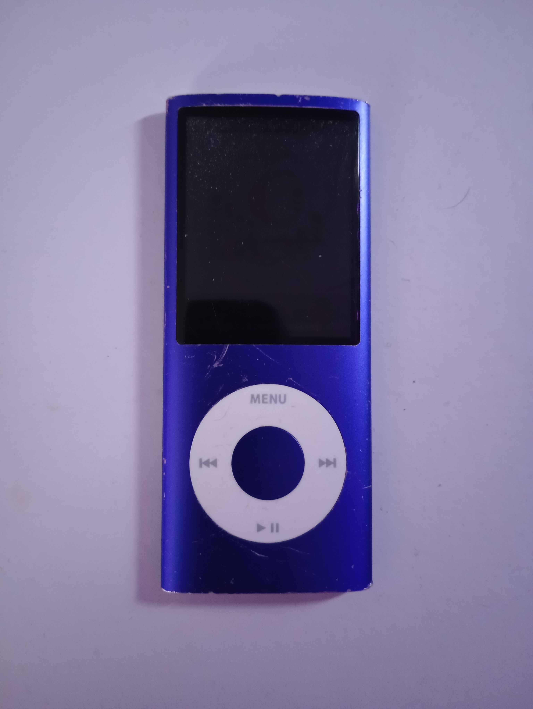
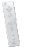

blogs
#3 // 2.7.26
it my birthday <3
see more
it's that time again!! i'm getting older... :( but in all seriousness, i'm a bit happy because i can drive now!! dunno exactly when i'll start learning tho lol.. but as for all things birthday related, i have one thing i'd like to talk about :3 so a few weeks ago i was looking at zunes on ebay while on call with my two friends (jarhead appreciation <3) and jarhead finds a good deal on an untested one. so he sent me a gift card as a birthday present, so yippee! then fast forward a week later, i get the zune... and its screen is broken :( but i know all was fair and square because i mean it did say "untested" but now the struggle is finding a screen!! so far i've only found a screen on alibaba out of all places... but jarhead might've found someone that has a screen so im PRAYING. well anyway, it my birthday. i go celebrate n shit now. ok bye :p
#2 // 1.9.26
i love ipods!! :3
see more
oh my beloved ipods... where do i start?? my interest in ipods came from no one other than dankpods! (i know, how shocking...) BUT hear me out. i'm not like one of those retroslop elitests that only like ipod because they're "old". i like ipods because i'm a nerd :3 that and streaming music isn't really that great anymore... i love the designs of the different ipods, especially the numerous colors of the ipod nanos *_* i actually have an ipod of my own! it a purple 4th gen nano (see in picture) and i LOVE her!! i use her as a daily driver for school and basically anytime i leave the house. sure it's an 8gb model, but she still gets the job done :]
#1 // 12.21.25
my strange obsession with wii u games lately
see more
i always wanted a wii u when i was younger, but sadly to this day i still do not have one :( but thank god for emulators! my friend has gotten me into playing super mario 3d world with her by remoting into her pc and using cemu. while it's a bit of a hassle to do with her on linux, it's still quite fun getting to play games that i wanted to play when i was younger. we've also been playing a lot of mario kart 8 (which she kicks my ass in) and sometimes our friends join in! it did become unusable at one point because cemu was being all screwy on her new install of linux, so she had to reinstall linux 2 or 3 times T_T but i would say it was worth the struggle because now we can play pretty much any wii u game ^^